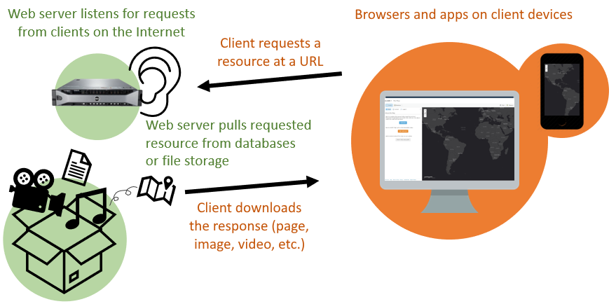

Web GIS Concepts, Part 1
Table of Contents
- Introduction
- Information, geographic information, GIS, and Web GIS
- Servers and services
- The Uniform Resource Locator
Terms: service, web service, URL
Introduction
What happens if you enter a web address such as https://www.census.gov into a web browser? You see something you have seen countless times before: a webpage.
What about the web address https://www.census.gov/content/dam/Census/about/regions/all-regions/new_ro_map.png? Again, nothing surprising: an image.
{kind=link}
Now how about the web address https://api.census.gov/data/2019/acs/acs5?get=B01003_001E&for=state:22? If the Census Bureau website is working, you should get this simple response (population of Louisiana):
[["B01003_001E","state"],
["4664362","22"]]
It is not a webpage, but you have used something like this countless times as well, maybe without knowing. You contacted an application on the Internet, known as a web service, and it returned data to you. Web services are a fundamental part of the web today, including Web GIS. Web services allow applications to talk to one another over the Internet, enabling the web as you know it to function.
This lesson will cover web services and other concepts to provide some background before we get into making web maps for the rest of the course.
Information, geographic information, GIS, and Web GIS
This semester, you will be introduced to a variety of technical topics related to maps and the Internet, but I want you to keep in mind that at the heart of it all is information.
There is information for research, business, government, and personal use, and over the centuries our information has been communicated in different ways. Books, letters, clay tablets, maps, websites, photographs, video, audio, and art are just a few examples of media that have carried information for us.
 Figure 1. Babylonian map of the world on a clay tablet, 700-500 BC.
Figure 1. Babylonian map of the world on a clay tablet, 700-500 BC.
By the mid-twentieth century, it had become practical to store information digitally on computers, though it was not as practical to share information between computers, especially globally.
The Internet and its earlier forms helped solve that problem, connecting computers together and enabling software that could transfer documents, images, and more around the world.
Among this long history and evolution of information transfer, this course will focus on the transfer of geographic information with geographic information systems (GIS). GIS has its roots in environmental applications such as land management and infrastructure in the 1960s and 70s, so digital geographic information has traditionally included features that you could print on a map (lines for roads and trails, points for cities and places of interest, polygons for lakes and parks, for example) and even imagery from satellites and aircraft. More recently, geographic information commonly includes media like video and photos that can be tagged with a location.
 Figure 2. A geographic information system used at Louisiana State University in the 1980s for land use assessment.
Figure 2. A geographic information system used at Louisiana State University in the 1980s for land use assessment.
As a way to transfer or communicate information, GIS turned maps into moving, living visualizations. Therefore, when it became practical to transfer geographic information over the Internet, maps could not simply be static images; users demanded more than just pictures that they could not click, zoom, or interact with at all. Web maps had to live up to the capabilities that were already present in GIS software, at least to the extent possible with browsers of the late 1990s and early 2000s.
It was expected that a website communicating geographic information online should allow users to move the map, zoom in and out to different scales, and show and hide layers of information on the map. For example, on a map of city infrastructure, users should be able to turn off the roads layer and show only the bus routes layer.
 Figure 3. Web maps from the 2000s powered by ArcIMS, a Web GIS server application. Source: Esri, 2006.
Figure 3. Web maps from the 2000s powered by ArcIMS, a Web GIS server application. Source: Esri, 2006.
At the same time, special considerations were needed due to slow Internet connections and low capacity for storage and processing on personal computers.
Therefore, a novel set of software and techniques emerged for organizing, analyzing, displaying, or sharing spatial data online, known collectively as Web GIS (or similar terms, web cartography and web mapping).
 Figure 4. A modern Web GIS application combining multiple data sources and visualizations into a dashboard. Source: JHU COVID-19 Dashboard.
Figure 4. A modern Web GIS application combining multiple data sources and visualizations into a dashboard. Source: JHU COVID-19 Dashboard.
Servers and services
While online maps were following trends in desktop GIS software for how map interfaces should look and behave, the Web GIS software running behind the scenes to power those maps was following broader trends in computing.
For one, Web GIS software uses a client-server model, in which client software (e.g., web browsers, mobile apps) makes requests to server software for the resources that are offered (or served) by those servers (e.g., map data, webpages, images, PDFs). You could load data, such as car crash locations, into GIS server software to make it accessible to clients via a web address, such as example.org/maps/car_crash_points_2019. The concept is the same for web servers in general for regular websites. Servers will be covered in more detail in Lesson 4.
 Figure 5. An example of servers and clients on the early web. In the most simple form of this relationship, humans use a client, such as a web browser on a PC, to download information from a server.
Figure 5. An example of servers and clients on the early web. In the most simple form of this relationship, humans use a client, such as a web browser on a PC, to download information from a server.
Another trend in software design that has been adopted in Web GIS is the use of services, independent programs with specific functions working together, instead of bundling many functions into one big program. To see services in action, look at the services running in a desktop operating system. Windows, for example, is not a single, monolithic program; it uses services dedicated to specific tasks. There are services for printing, audio, networking, and so on. In Web GIS, an application might use different services for displaying data, finding driving routes, and other tasks related to maps.
 Figure 6. A list of services running in the Windows operating system (OS). These services perform specific tasks for the OS and applications installed in the OS, for example, printing a document from Windows or Word.
Figure 6. A list of services running in the Windows operating system (OS). These services perform specific tasks for the OS and applications installed in the OS, for example, printing a document from Windows or Word.
With the Internet, services are not limited to communicating only with other services on the same computer. They can be accessed by software on computers (servers or clients) in a different office, a different department, a completely different company, university, or government agency, or even by the general public. These are web services. A web service is a program on a web server that exposes programming interfaces to other applications on the web, allowing communication between applications. Stated more plainly, web services are how machines talk to machines online, sharing and processing data. Web services can be understood through examples better than textbook definitions, so some are given below and the assignment that accompanies this lesson gives a concrete demonstration.
 Figure 7. Clients downloading information from servers, and servers communicating through web services. Web services allow communication between computer systems, such as using a Facebook account to sign into Netflix or ArcGIS Online. Netflix and ArcGIS Online (Esri) use servers hosted by Amazon Web Services (AWS) for storage and computing.
Figure 7. Clients downloading information from servers, and servers communicating through web services. Web services allow communication between computer systems, such as using a Facebook account to sign into Netflix or ArcGIS Online. Netflix and ArcGIS Online (Esri) use servers hosted by Amazon Web Services (AWS) for storage and computing.
This service-oriented approach is very common today. Think about Facebook as an application, with user sign-ins handled by a service. Facebook can use its own sign-in service across its websites and apps, but it can also open up that service to third parties. Web services are why you can use a Facebook account to sign into other websites, and why Disney+ customers can pay with PayPal, and why a Weather Underground map can show a radar layer from the Weather Channel website, and so on. Web services allow applications, including maps, to talk to each other.
 Figure 8. A weather map (wunderground.com) that displays radar imagery from a different website (weather.com) via a web service. The right panel (wunderground.com) shows the map with a mosaic of radar tiles, while the left (Chrome Developer Tools) shows the URLs of the individual tiles downloaded by my browser and pieced together on the map.
Figure 8. A weather map (wunderground.com) that displays radar imagery from a different website (weather.com) via a web service. The right panel (wunderground.com) shows the map with a mosaic of radar tiles, while the left (Chrome Developer Tools) shows the URLs of the individual tiles downloaded by my browser and pieced together on the map.
The data is not necessarily being duplicated for each of these websites. Instead, they essentially “stream” the data via a web service and display it through their own website. The Weather Underground website does not need a copy of all Weather Channel radar imagery, it can simply stream the images directly from the Weather Channel servers to your browser. Likewise, if you can sign into Netflix with a Facebook account, it is not because Netflix has a copy of all Facebook users and passwords, it is because Netflix talks to Facebook via web services to authenticate your account and, if successful, sign in.
This “stream” of data for many web services can be reached through a unique address, similar to how we access webpages.
The Uniform Resource Locator
Normally, a URL, or uniform resource locator, is a web address you use to go to a website, e.g., https://example.org. But URLs can point to other resources on the Internet.
The vague term “resources” is used because it does not refer to a specific type of file or form of media. A “resource” can be a document, image, video, etc. In the case of webpages, the URL might point to a document like index.html. Or it might be logo.png for an image.
But URLs do not have to point to files. When you visit most websites, you are not simply downloading an existing document file, you are triggering an application to generate a webpage document. For example, when you sign into your email hosted by Microsoft and the page shows your name at the top and lists your messages, Microsoft does not have a webpage file with your name on it already along with the text of your current messages. The page you see was generated by an application when you accessed the page, pulling your name and current messages dynamically from a database.
 Figure 9. To download webpages, images, and other resources from a URL, clients like browsers and mobile apps send a request to a web server. Behind the scenes, the web server and other applications retrieve the resource from a database or file storage. They may perform other tasks, such as check if the client is signed in or customize the resource based on client input (e.g., print “Hello, Dave” at the top of the webpage). Then the web server responds with the resource for the client to download.
Webpages that seem personalized, or that let you interact and customize the experience, are applications that are responding to your input, including the URL you used to access the page. To use an online shopping example, going to example.com/cart might take you to a shopping cart page that shows you the products you have added, then example.com/checkout would show you a page where you can pay. In both cases, an application is generating pages triggered by the URL request, based on information the application pulled from the product database, customer database, and any other data sources needed for you to check out.
This idea of an application responding to a URL, and from that getting information from a database, is an important concept for web services. In the next lesson, we will see what happens when we contact a web service directly.
Summary
Information is the foundation of Web GIS. Information, and specifically geographic information, is distributed on the web by servers running websites and programs called web services. Applications use web services to interact with one another online. Web services can be accessed via URLs, similar to webpages, and they can return a variety of resources, such as text or images.
This topic continues with examples and an exercise in Lesson 3.
TopBack to Lessons